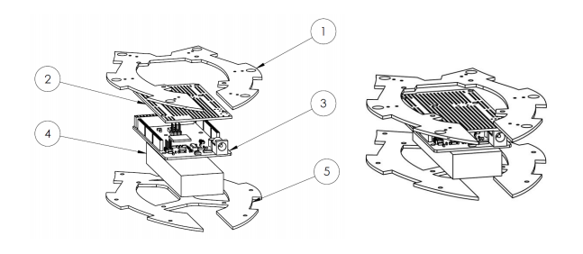
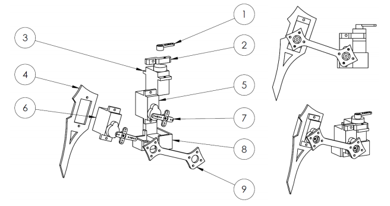
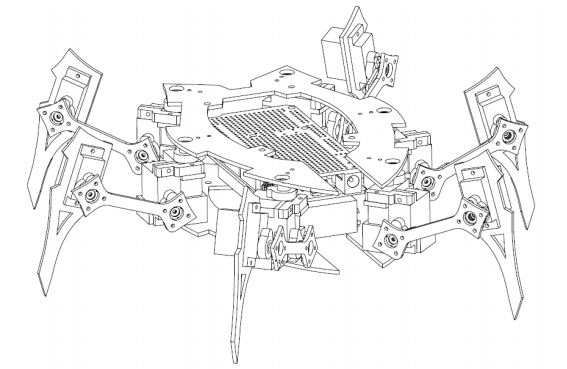

Design
Body
We put a great deal of effort in computer aided prototyping. The initial 3D models were produced in SolidWorks 3D. Decomposed body model and its description can be seen here.
| # | Component |
|---|---|
| 1 | Upper body plate |
| 2 | Servo shield |
| 3 | Arduino board |
| 4 | Battery |
| 5 | Bottom body plate |

Legs
One of the biggest challenges of designing the robot was designig its leg. We tried to keep the parts as light as possible while maintainig a certain level of robustness. The leg consists of three servo motors which give the endpoint of the lower leg three degrees of freedom. The two servo motors closest to the body were bundled together in a 3D printed plastic frame to ensure precision of movement of the leg.| # | Component |
|---|---|
| 1 | 1st servo motor cap |
| 2 | 3D printed frame |
| 3 | 1st servo motor |
| 4 | Lower leg |
| 5 | 2nd servo motor |
| 6 | 3rd servo motor |
| 7 | 2nd’s and 3rd’s servo motor cap |
| 8 | 3D printed frame part |
| 9 | Upper leg |

End design
The image on the right represents the final model of all the components of the robot put together. After modeling, we have immersed ourselves in counstruction of the final product. Under the Construction section you can read all about the manufacturing and assembly of parts.
The whole is other than the sum of its parts
Kurt Koffka
